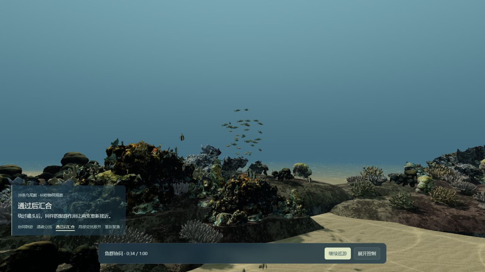

一群鱼，如何一起经过礁体？
先看60秒：鱼群遇礁分流，经过后汇合，受到局部扰动后散开，再重新聚集。再沿同一4分钟路线，从礁谷穿过沙道与草床。此轮沿用既有资产、293个体和38个展示类别，集中展示群体行为，没有新增物种或重做场景。
01
四个行为时刻 · 真实浏览器画面
来自已归档本地版本，不是概念效果图




02
这一轮实现了什么？
邻居协同与有限演示，保留原栖息地路线
与附近同伴协调
38条乌尾鮗根据邻近个体保持间距、调整朝向与聚群，变化通过局部关系形成整体群游。
其它255个动物保持原活动；没有将底栖居民统一改成群游。从既有礁体两侧经过
沿原场景经过sample-rock-0，结合实际海床支撑与礁体避让，形成分流和通过后的汇合。
远侧分支有局部遮挡；截图与采样不证明所有身体持续无碰撞。局部反应，群体重新组织
36秒安排一次演示扰动，先影响局部个体，再由邻居传播；扰动后恢复间距和共同方向。
未新增真实捕食者；演示刺激与行进方向有编排，不是完整自主生态。03
本地基线与正式发布分开看
新增讲解和线上播放以本轮发布回执为准
60秒协同演示 · 先前本地实播
1×连续60.01实秒，无操作中断；p95 16.6ms，最长95.9ms。47张贴图准备完成，正常缓存未清的本地导航9.336秒。
4分钟主线 · 先前本地实播
1×连续240.23实秒，无操作中断；p95 12.6ms，最长162.4ms。正常缓存未清的本地导航5.119秒；当时使用六段旧讲解。
两次基线均为1280×720 / DPR1.5 / RTX 4070 Laptop / 渲染比例1；169项不同相关检查通过，非全世界回归。它们来自a935a3e本地归档，早于本轮五段新旁白，不能当作新配音或公网冷加载证明。查看原始本地摘要 · 查看本轮发布回执 · 查看对应提交的发布检查
04
到这里收口
版本固定，保留已知边界
这是有限60秒演示与240秒浅海主线。30Hz邻居求解先准备为固定场景播放，单次扰动和导向有编排；不是对任意新环境实时反应的完整鱼群生态。既有模型感、礁体硬边、远侧遮挡与约5–9秒的本地基线加载仍保留。准备范围到240秒，接管探索后超过该时刻，这38条鱼保持末帧姿态。其他持续探索入口仍有自己的跨区等待与验收范围。
素材仍为自制或免费且允许按条件再分发的既有资产，署名、非商业与相同方式共享条件保持。发布并核验后阶段性归档，不自动新增场景、资产或开启下一轮优化。